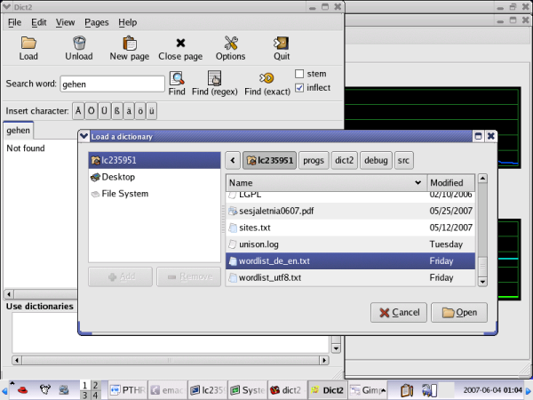
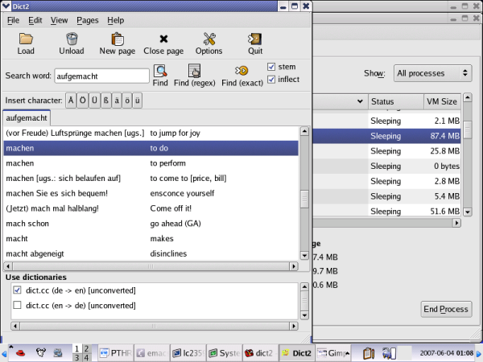
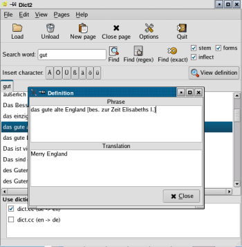

Dict2Dict2 is a dictionary viewing application for GNU/Linux (GTK+). It was written with the intention to be used with the German-English dictionary files from www.dict.cc.
Features
DownloadThe latest version is 2.0.1. Note: You must download the dictionary files directly from here. They are not included in the distribution. Important: You should choose the old format when downloading (Elcombri / old format, cp1252). Other formats are not supported. Short manualLoading the filesAfter downloading and unzipping the file just load the textual file with the 'Load' button. Search typesThere are three search types.
The stem, inflect and forms optionsYou may search words with a stem common with the word typed by checking the 'stem' checkbutton. For instance, searching 'ausmachen' gives 'machen' as one of the translations. This option may be combined with the inflection search - searching inflections of a word. If these two buttons are checked then looking for e.g. 'gemacht' gives 'machen' and 'ausmachen' among other results. If only the 'inflect' option is chosen, 'ausmachen' is not displayed. Another option similar to the two described is the 'forms' option - checking it enables searching words which are derived from the word typed, but have a different grammatical form (e.g. you type a verb and get a noun). For instance, if you search 'Ruhe' with this option enabled, you get 'ruhig' among other results. The more of these three options you use, the slower your searches become. If you have a slow computer you might consider unchecking all of them. On modern machines, however, the difference in speed is usually imperceptible. Viewing a definitionIf you want to copy text from one of the results, just select the desired line in the results view and click the 'View definition' button or double-click the line. This shows the definition is a separate window. This feature is also useful if the text is too long and you can't see the whole of it.  |